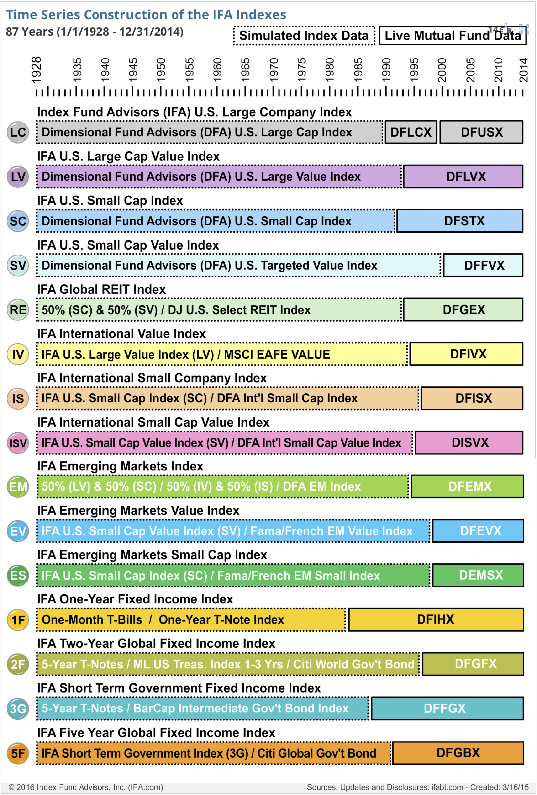

Historical Index Returns
Investment decisions should be based on as much relevant historical data as possible. A few researchers have compiled rich, long-running time series of returns for important asset classes. These time series can have different starting points, usually because of underlying data availability. Some investment practitioners have sought to increase the statistical validity of their data inputs by creating synthetic time series.
Actual and synthetic time series
One innovator in this regard is Index Fund Advisors (IFA), which has compiled nearly 90 years of returns for two asset classes (stocks and bonds), and a variety of categories within those asset classes, shown here:
- IFA U.S. Large Company Index
- IFA U.S. Large Cap Value Index
- IFA U.S. Small Cap Index
- IFA U.S. Small Cap Value Index
- IFA Global Real Estate Investment Trust (REIT) Index
- IFA International Value Index
- IFA International Small Company Index
- IFA International Small Cap Value Index
- IFA Emerging Markets Index
- IFA Emerging Markets Value Index
- IFA Emerging Markets Small Cap Index
- IFA One-Year Fixed Income Index
- IFA Two-Year Global Fixed Income Index
- IFA Short Term Government Fixed Income Index
- IFA Five Year Global Fixed Income Index

Source image is from IFA.
Risk & Reward
Below is a summary of the risk and return characteristics of these indexes, according to IFA. These indexes fall on a spectrum of risk and return. As we will see, because they do not move in perfect lockstep with one another, by mixing these indexes together in differing proportions, it is possible to form a range of investment portfolios.
| Index |
Return (%)* |
Risk (%)** |
| U.S. Large Company Index |
9.3 |
18.1 |
| U.S. Large Cap Value Index |
10.5 |
22.5 |
| U.S. Small Cap |
11.2 |
24.5 |
| U.S. Small Cap Value |
12.5 |
25.6 |
| REITs |
11.0 |
24.3 |
| International Value |
9.3 |
22.8 |
| International Small Company |
12.4 |
23.5 |
| International Small Cap Value |
13.0 |
25.1 |
| Emerging Markets |
12.5 |
23.8 |
| Emerging Value |
13.7 |
26.4 |
| Emerging Small Cap |
13.8 |
24.6 |
| 1 Year Fixed Income |
3.8 |
1.5 |
| 2 Year Global Fixed Income |
4.5 |
3.0 |
| Short Term Government |
4.8 |
3.6 |
| 5 Year Global Fixed Income |
4.8 |
3.6 |
* Average arithmetic 12-month return
** Average 12-month standard deviation
Website Comp
The Index Fund Advisors website is a great model for the sort of investment-related information that is on this personal website. In my view, they have done an excellent job of creating a huge body of content on this technical subject that is useful to an interested audience. They have put a lot of work into well-written explanations of these concepts, website design (layout and formatting), in creating multiple media types (including video and podcasts), and in disseminating their content through many channels. Given that their site has led to the majority of its growth, I would say that it is effective.